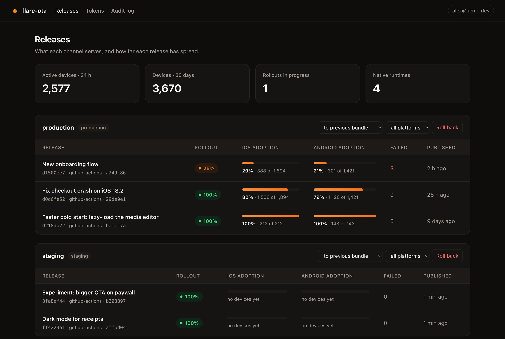

$ npx flare-ota publish --branch production -m "New onboarding flow" --rollout 25 Exporting ios + android… uploading 4 of 212 files… Published New onboarding flow → production · rollout 25% $ npx flare-ota metrics --branch production